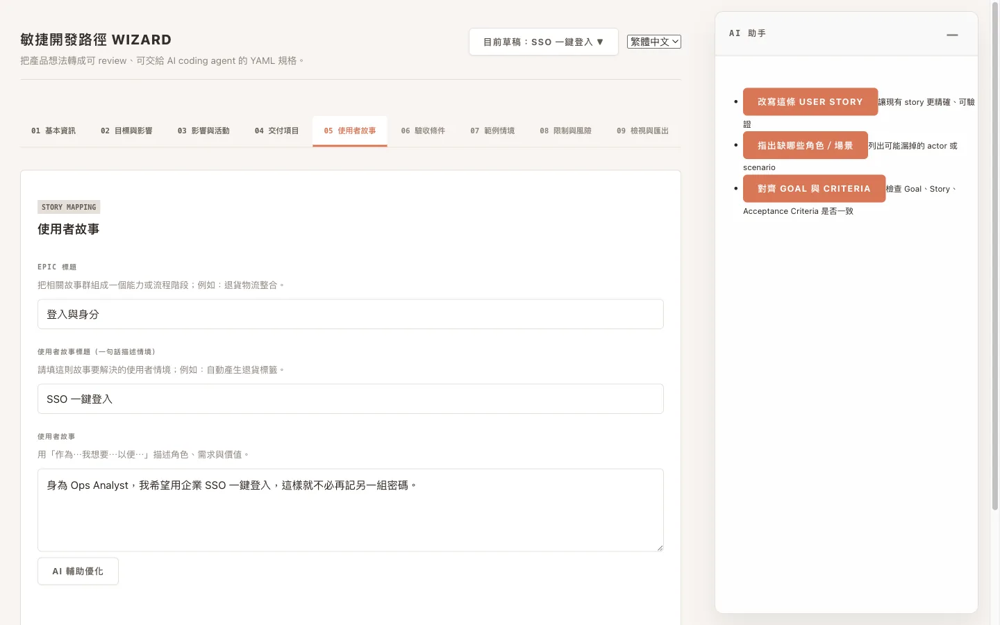
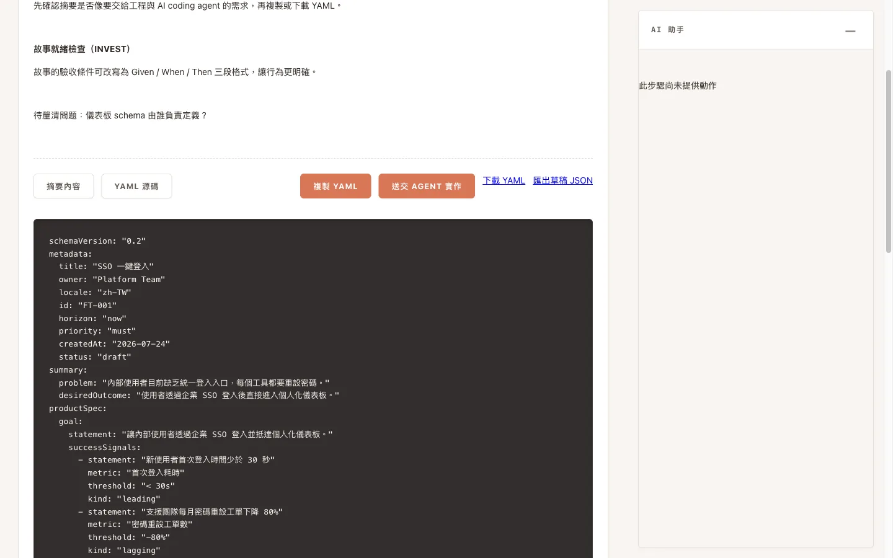

Agile Roadmap Wizard
把一個粗略的想法，變成 AI agent 真的做得出來的規格。
Vector 用一位好技術主管會問的方式訪談你——目標、影響、使用者故事、驗收條件、邊界—— 最後匯出一份結構化的 YAML 規格，讓 Claude Code 或 Codex 不必自己猜。
問題
模糊的指令，只會換來模糊的程式碼。
丟一句話給 AI coding agent，它會很有自信地把你沒講的部分自己補完：那些邊界案例、 那些你不想要的東西、那個你以為理所當然的限制。問題不在模型，而在於沒有人寫下「做完」是什麼意思。
Vector 就是補上這一段的訪談。它刻意設計成有結構，讓非技術的決策者能獨力完成， 而產出的精確度又足以直接交給 agent。

為什麼是 Vector
為了交接而設計，不是為了展示。
不綁定單一 agent
本機 CLI agent 走同一套契約。用 VECTOR_AGENT=claude 或 VECTOR_AGENT=codex 切換——同一份規格、同一組動作，不必重寫。
AI 只提建議，不做主
Assist 回傳的是建議、警告與待答問題。它不會偷改你的草稿，而且沒有它精靈照樣走得完。
RAID 是規格的一部分
風險與待答問題跟著 feature 一起走，各自帶有狀態，不會消失在某串留言裡。
紙感、高資訊密度
用溫暖中性色與細線，而不是會發光的儀表板——這個介面是為了長時間撰寫規格，不是為了截圖好看。
雙路徑
從既有程式碼開始，或從零開始。
路徑 A — 程式碼轉規格
把 vector-analyzer skill 指向既有的 repository，它會逆向產出一份 Feature Draft，你再進精靈裡細修。
請使用 vector-analyzer 技能分析這個 repo，
並產出 FeatureDraft JSON。路徑 B — 構想轉規格
用 vector-pipeline-b skill 讓一個原始的系統構想走過四個階段——Frame、Decompose、Slice、Handoff——最後產出 Feature Seed。
npx vector-wizard import \
docs/methodology/reference-case/04-handoff/
四個階段的完整範例就附在 repo 的 docs/methodology/reference-case/ 底下，
包含兩份已完成、現在就能匯入的 Feature Seed。
產出
是規格，不是摘要。
每一份草稿都匯出成同一種結構：metadata 決定它在路線圖上的位置、
productSpec 說明要做什麼、agentSpec 界定 agent 必須遵守的邊界。
以下是參考案例 FT-001 的真實產出，為了篇幅有所節錄。
schemaVersion: "0.2"
metadata:
title: "SSO 一鍵登入"
locale: "zh-TW"
id: "FT-001"
horizon: "now"
priority: "must"
status: "draft"
productSpec:
goal:
statement: "讓內部使用者透過企業 SSO 登入並抵達個人化儀表板。"
successSignals:
- statement: "新使用者首次登入時間少於 30 秒"
- statement: "支援團隊每月密碼重設工單下降 80%"
epics:
- title: "登入與身分"
stories:
- id: "US-001"
title: "SSO 一鍵登入"
userStory: "身為 Ops Analyst，我希望用企業 SSO 一鍵登入，這樣就不必再記另一組密碼。"
acceptanceCriteria: []
agentSpec:
nonGoals:
- "不支援外部客戶登入"
constraints:
- "必須使用既有 Snowflake 倉儲"
openQuestions:
- id: "Q-001"
text: "儀表板 schema 由誰負責定義？"
status: "open"不論你用哪種語言撰寫，YAML 的 key 一律維持英文，因此同一份規格可以跨團隊、跨 agent 流通。 匯出時會同時產生一份給人閱讀的 Markdown 摘要。

快速入門
兩行指令就能在本機跑起來。
# 不安裝任何東西，直接跑精靈
npx vector-wizard
# 或是 clone 下來開發
bun install
bun run dev # 預設使用 claude agent
VECTOR_AGENT=codex bun run dev
精靈會開在 http://localhost:3000。草稿存在瀏覽器的 localStorage，
也可以匯出成 JSON——沒有後端，除了你所選的本機 agent 自己發出的請求之外，
沒有任何資料離開你的電腦。
- 完整安裝與 skill 設定說明：README
- 產品詞彙表：
CONTEXT.md - 貢獻者與 agent 指南：
AGENTS.md